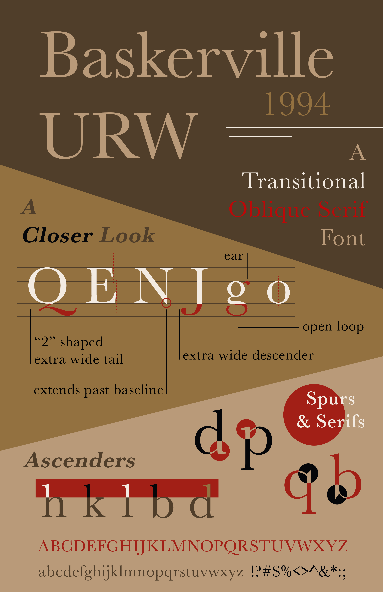
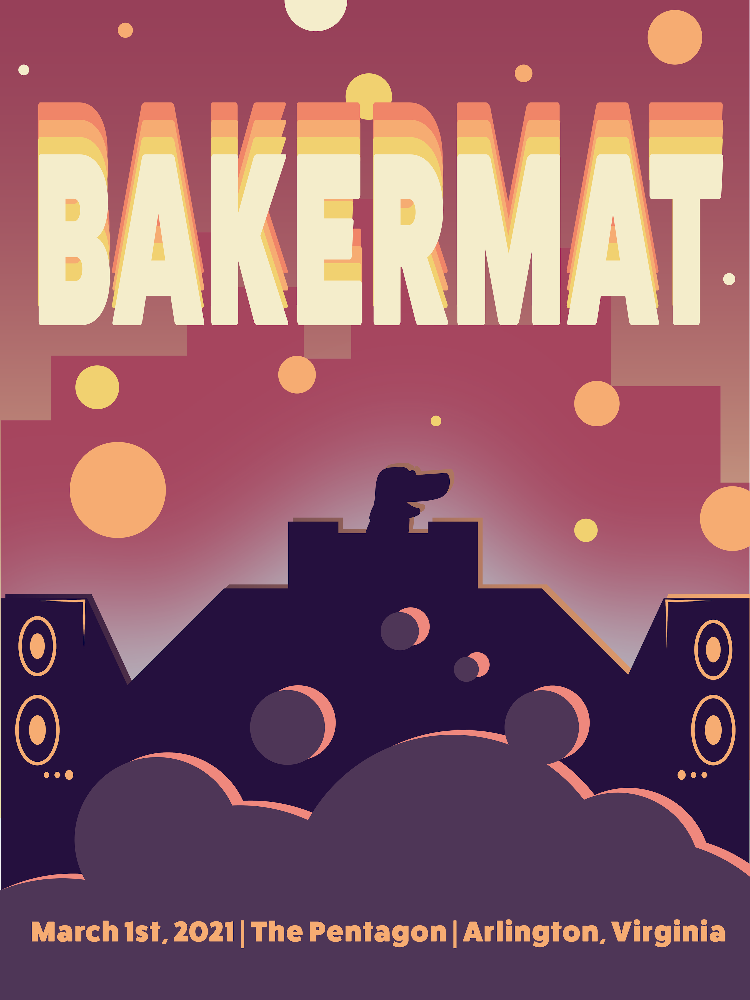
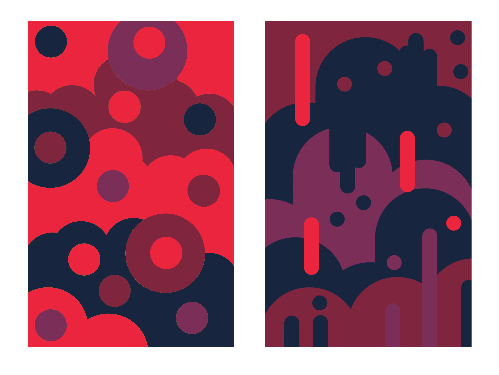

About
(current)
Work
Connect
Hello!
I am
Allana
:)
lifelong learner and a student @ the university of michigan
Hey friend, take it easy. Life is short.
sometimes i do things



Connect with me!
you can contact me at
allanatt@umich.edu
or find me somewhere on north campus
i am confusioning